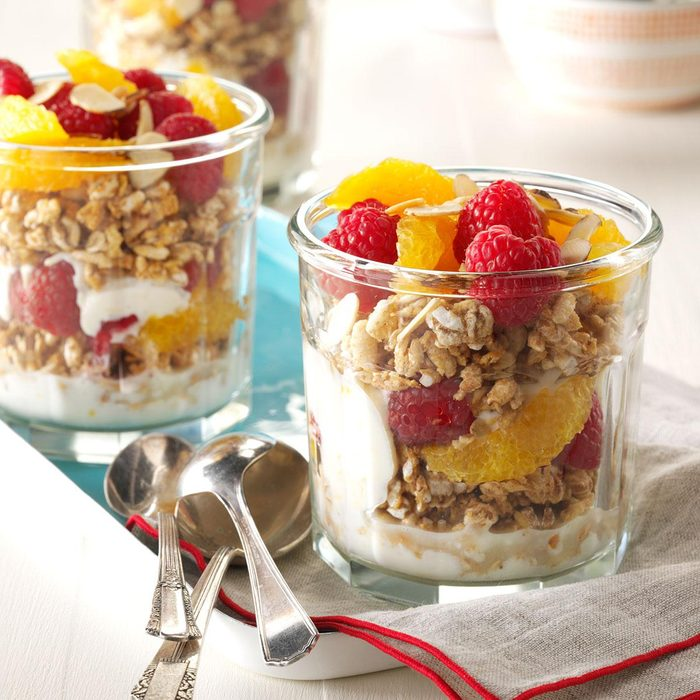

Powerhouse Protein Parfaits

Healthy and Hearty
Parfaits have marvelous taste and texture, but many are loaded with sugar and leave you peckish for more. Here’s my protein-inspired option with yogurt, fruit and nuts.
Ingredients:
- 3 cups plain Greek yogurt
- 1/3 cup honey
- 2 teaspoons grated orange zest
- 2 cups Kashi Go Lean Crunch cereal
- 2 cups orange segments
- 2 cups fresh raspberries
- 1/4 cup sliced almonds, toasted
Steps:
- In a bowl, mix yogurt, honey and orange zest until blended.
- Layer half the yogurt mixture, cereal, orange segments and raspberries among four parfait glasses.
- Repeat layers; sprinkle with almonds.
- Serve immediately.